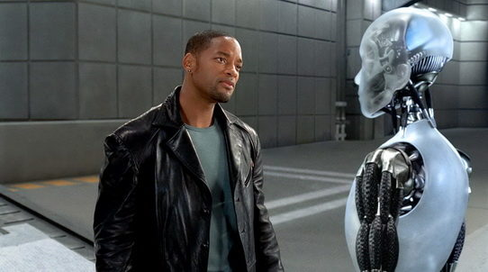
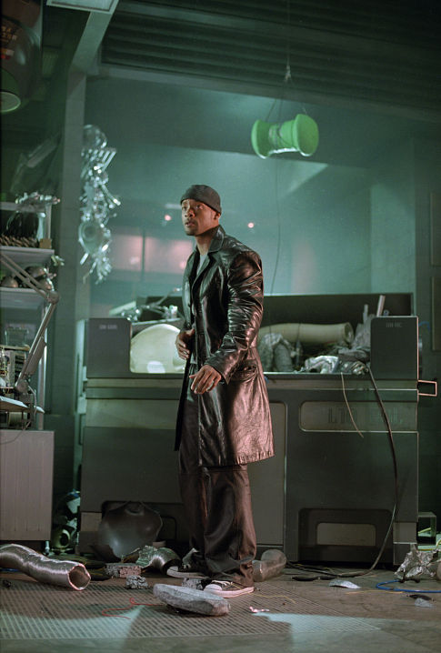
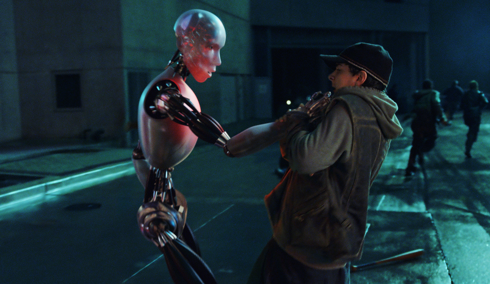
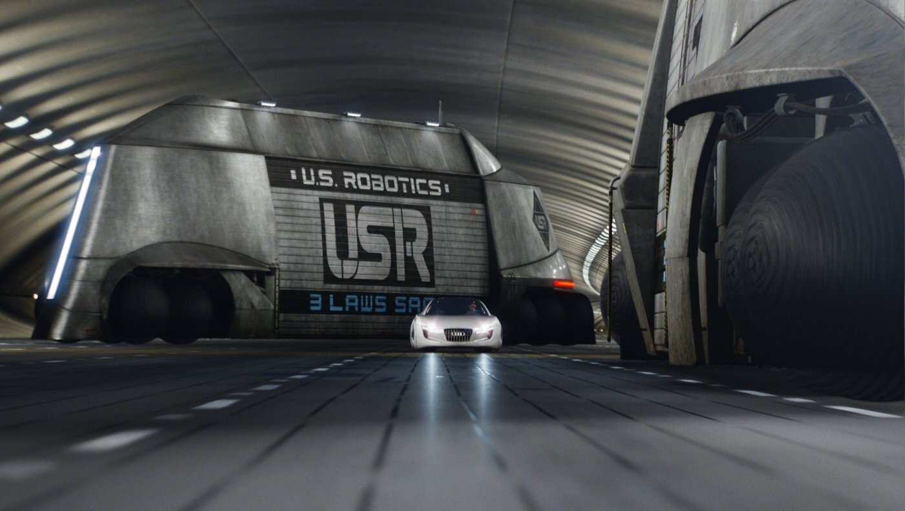
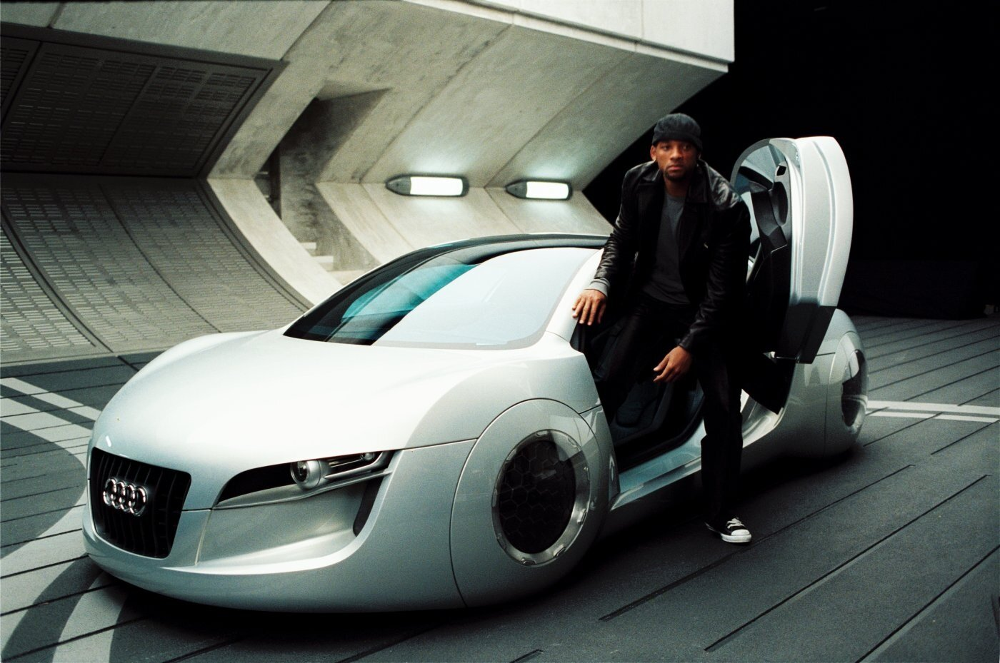

Детектив Дел Спунер розслідує загадкове падіння доктора Леннінга з вікна штаб-квартири U.S. Robotics. Головний підозрюваний — експериментальний робот моделі NS-5 на ім'я "Санні", який, ймовірно, здатний порушувати Три закони робототехніки.
Біомеханіка: Посилені сервоприводи передпліччя, здатні витримати екстремальні навантаження — ідеально адаптовані для механічного зчеплення, наприклад, для армрестлінгу чи підйому важкої техніки.
Модуль охолодження: Застосовано рідкометалевий термоінтерфейс нового покоління. Після технічного обслуговування він знижує робочу температуру позитронного мозку на 15 градусів під час пікових системних навантажень.




